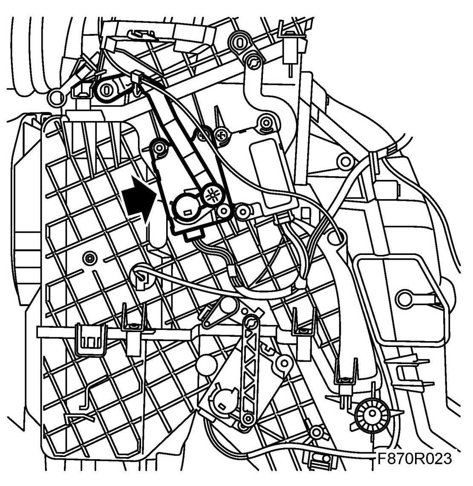
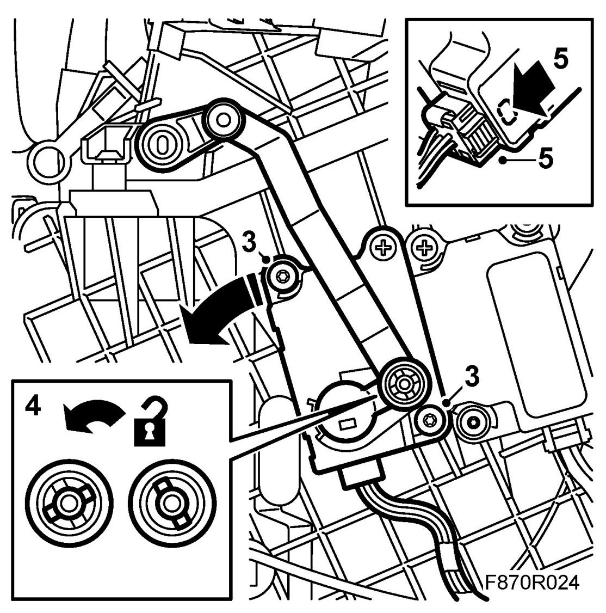
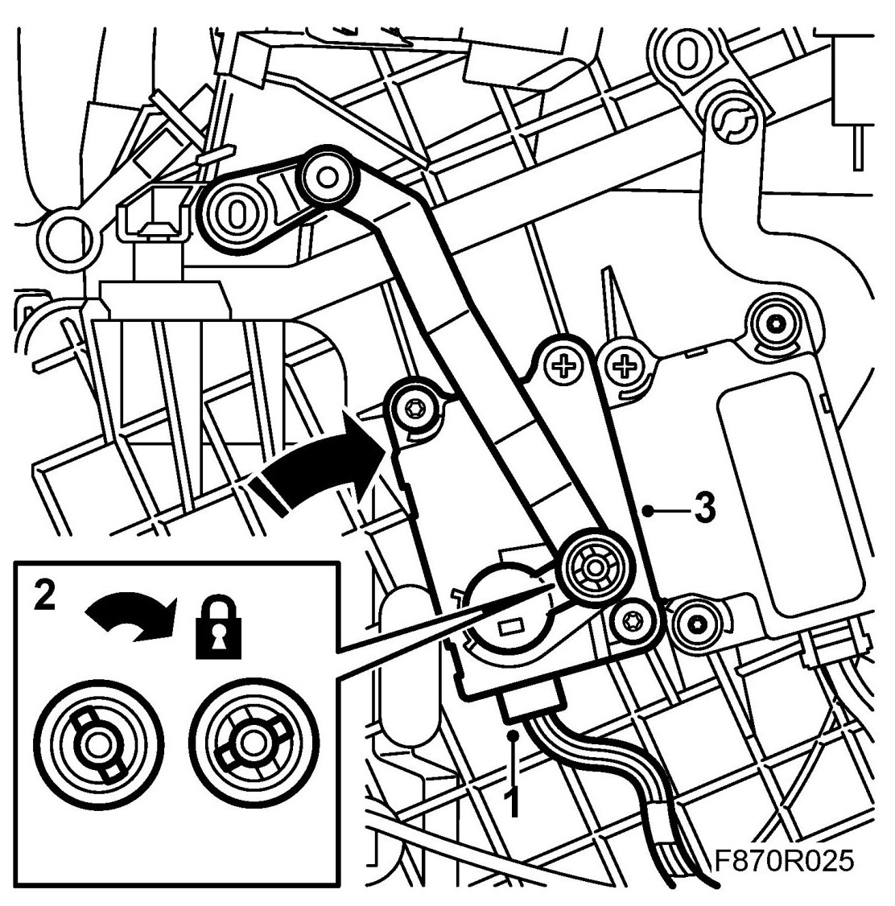

Defrost Air Distribution Flap Stepping Motor
Defrost Air Distribution Flap Stepping Motor
To remove
1. Dismantle the driver's acoustic insulation.
2. Dismantle the air duct for the floor vent.
The defrost air distribution flap stepping motor is located at the top front on the heating and ventilation unit's left hand side.

3. Remove the screws from the stepping motor.

4. Carefully lift out the stepping motor a little. Turn the stepping motor so that it releases from the link arm.
5. Dismantle the stepping motor's connector by pressing in the lock and pulling out the connector.
To fit
1. Connect the connector to the stepping motor. Make sure the connector locks correctly.
2. Fit the stepping motor to the link arm and align the steeping motor on the guide pin.

3. Fit the stepping motor.
4. Fit the air duct for the floor vent.
5. Fit the driver's acoustic insulation.